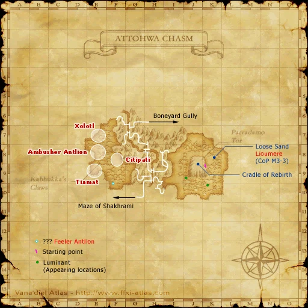

Level 75 reference · Zenith rules
|
Job: Notorious Monster |
|
|
Zone |
Level |
Drops |
Steal |
Spawns |
Notes |
|
1 |
A, L | ||||
|
HP = Detects Low HP; M = Detects Magic; Sc = Follows by Scent; T(S) = True-sight; T(H) = True-hearing JA = Detects job abilities; WS = Detects weaponskills; Z(D) = Asleep in Daytime; Z(N) = Asleep at Nighttime | |||||
Notes:


Image source
- Lottery Spawn from the Trench Antlion at F-8, the crack that backs into an empty room with the black smoke.
- The Trench Antlion at F-8 spawns every 5 min, when he doesn't spawn Ambusher is up.
- After the Trench Antlion does not spawn, go and rest on the cracks outside of that room.
- confirmed spawn on the cracks at E-8.
- The Archer's Jupon drops 100% of the time.
- Killable by: Solo by a 75BST/37NIN with multiple pet swaps. Scorpions are plentiful, but Trench Antlions work better as pets.
- Killed by a party of 5 level 75's
- The Mandibular Bite he uses unusually strong, hitting the local Antlion pets for 1.5k+.
- The Mandibular Bite he uses seems to increase in stregth after he gets to ~20% HP.
Adapted from Eden Wiki: Ambusher Antlion · Contributors and history · CC BY-SA 4.0. Revision 2022. Layout, links and optional background text adapted for Zenith.